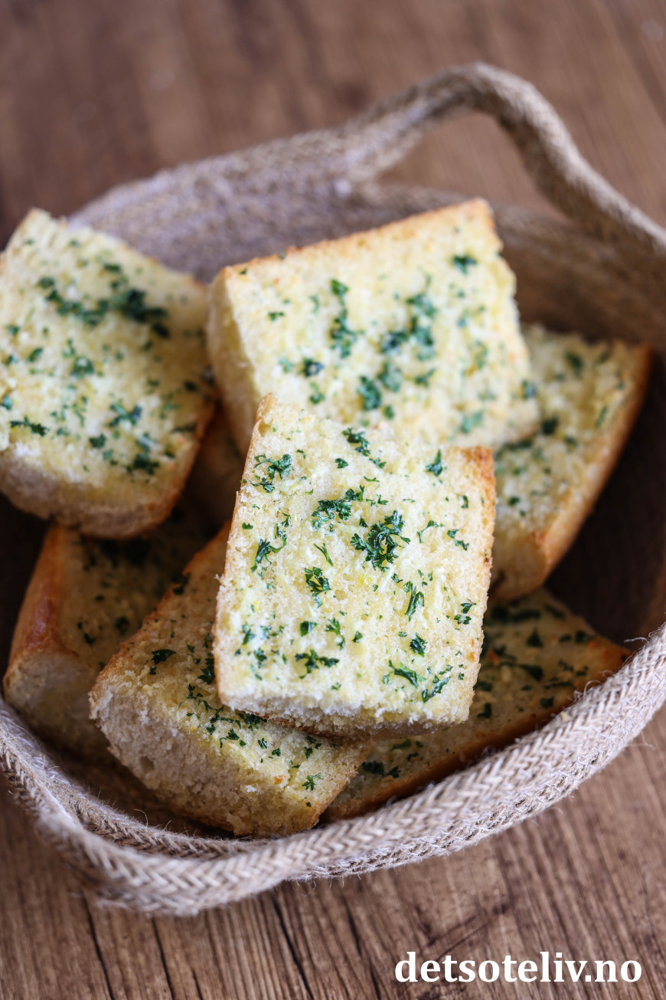

Garlic Bread

Description
Easy and delicious way of making garlic bread by using a regular baguette.
Ingredients
- 1 baguette
- 100 g butter, room temperature
- 4 garlic cloves
- 4 tbsp parsley, finely chopped
Steps
- Cut the baguette in sections, then slice them in the middle.
- Mix butter with crushed garlic cloves and parsley.
- Spread a good layer on each baguette piece.
- Put the pieces on a baking pan and cook them in the oven at 200 C for 10-15 minutes.
They are done when golden at the edges.
- Serve the bread warm and fresh.